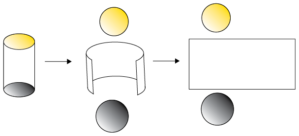
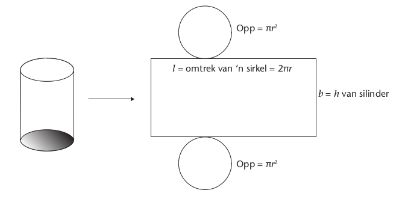
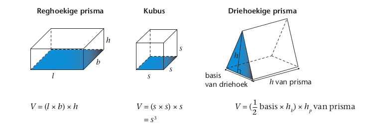
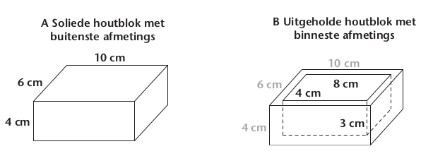

Buite-oppervlakte, volume en kapasiteit van 3d-voorwerpe
Teen die tyd behoort jy te weet hoe om die buite-oppervlakte en volume van kubusse, reghoekige prismas en driehoekige prismas te bereken. In hierdie hoofstuk sal jy dit weer hersien, oefen om omskakelings te doen tussen ekwivalente eenhede wat vir volume gebruik word en die verskil tussen volume en kapasiteit hersien. Jy sal ook ondersoek hoe om die buite-oppervlakte en volume van silinders te bereken, asook verken hoe die volumes van ʼn prisma en ʼn silinder beïnvloed word as een of meer van die afmetings verdubbel.
Buite-oppervlakte
Buite-oppervlakte van prismas
Die buite-oppervlakte van ʼn voorwerp is die totale oppervlakte van al sy vlakke bymekaargetel. Jy het die volgende formule in die vorige grade geleer:
Buite-oppervlakte van ʼn prisma = Somtotaal van die oppervlaktes van al die vlakke
Bereken die buite-oppervlakte van die volgende voorwerpe om te hersien wat jy alreeds moet weet.
1.
2.
3.
4.
5.
6.
7.
8.
Ondersoek die buite-oppervlakte van silinders
Ten einde die buite-oppervlakte van ʼn silinder te bepaal, moet jy weer watter soort vlakke ʼn silinder het.
Die oppervlakke van die bokant en basis van ʼn silinder bestaan uit sirkels. Die geboë oppervlak tussen die bokant en basis van ʼn silinder kan oopgerol word om ʼn reghoek te vorm.

Dus lyk die net van ʼn silinder soos volg:

\(\begin{align} \text{Buite-oppervlakte van ʼn silinder }&= \text{ Oppervlakte van al die vlakke } \\ &= \text{ Oppervlakte van bokant } + \text{ Oppervlakte van basis } +\text{ Geboë oppervlakte } \\ &= \pi r^2 + \pi r^2 + (l \times b)\\ &= 2\pi r^2 + (2\pi r \times h)\\ &= 2\pi r(r + h) \end{align}\)
Kan jy verduidelik hoekom die lengte van die reghoek gelyk is aan die omtrek van die bokant of basis van die silinder?
Berekening van die buite-oppervlakte van silinders
Vanuit die formule op die vorige bladsy, kan jy sien dat ons slegs die radius (r) en hoogte (h) van ʼn silinder nodig het om sy buite-oppervlakte te bereken.
1. Bereken die buite-oppervlakte van elk van die volgende voorwerpe. Gebruik \(\pi = 3,14\) en rond jou antwoorde af tot die naaste twee desimale plekke.
A
B
2. Bereken die buite-oppervlakte van ʼn silinder waarvan die hoogte 60 cm en die omtrek van sy basis 25,12 cm is.
3. Bereken die buite-oppervlakte van ʼn silinder waarvan die hoogte 5 m en die omtrek van sy basis 12,56 m is.
4. Die buitekant van ʼn silindriese struktuur by ʼn fabriek moet geverf word. Die radius is 3,5 m en die hoogte is 8 m. Hoeveel liter verf moet aangekoop word as 1 liter verf 10 m2 sal bedek? (Die onderkant van die struktuur word nie geverf nie.)
Volume
Die volume van enige voorwerp is die hoeveelheid ruimte wat dit beslaan. Ons meet volume gewoonlik in kubieke eenhede, soos mm3, cm3 en m3.
Om tussen kubieke eenhede om te skakel, onthou:
1 cm3 = 1 000 mm3
1 m3 = 1 000 000 cm3
Formules vir volume van prismas
Die algemene formule vir die volume van ʼn prisma is:
\( \text{Volume van ʼn prisma } = \text{Oppervlak van basis } \times \text{hoogte. }\)
In die geval van ʼn driehoekige prisma moet die hoogte van die driehoekige basis (\(h_b\)) nie verwar word met die hoogte van die prisma (\(h_p\)) nie.
Dus, die formules om die volumes van die volgende prismas te bereken is:

Berekening van die volume van prismas
1. Bereken die volume van die volgende prismas.
A
B
C
D
2. (a) Die basis van ʼn reghoekige prisma is 32 m2 en sy hoogte is 12 m. Wat is sy volume?
(b) Die volume van ʼn kubus is 216 m3. Wat is die lengte van een van die rande?
3. Bereken die volume van die volgende voorwerpe.
A
B
Volume van silinders
Die volume van ʼn silinder is ook gelyk aan die oppervlakte van sy basis vermenigvuldig met die hoogte. Die basis van ʼn silinder is sirkelvormig, dus:
\(\begin{align} \text{Volume van ʼn silinder } &= \text{Oppervlakte van basi } \times h \\ &= \pi r^2 \times h \end{align}\)
1. Bereken die volume van die volgende silinders. Gebruik \(\pi = 3,14\) en rond alle antwoorde af tot twee desimale plekke.
A
B
C
D
2. Sonder die gebruik van ʼn sakrekenaar, bereken die volume van die silinders met die volgende afmetings. Gebruik \(\pi = \frac{22}{7} \).
(a) \( r = 14 \text{ cm, } h = 20 \text{ cm }\)
(b) \( r = 7 \text{ cm, } h = 35 \text{ cm }\)
(c) \(\text{middellyn } = 28 \text{ cm, } h = 50 \text{ cm }\)
(d) \(\text{middellyn } = 7 \text{ cm, } h = 10 \text{ cm }\)
3. Bereken die volume van die volgende voorwerp. Gebruik ʼn sakrekenaar en rond alle antwoord af tot twee desimale plekke.
Kapasiteit
Onthou dat die kapasiteit van ʼn voorwerp is die hoeveelheid ruimte binne-in die voorwerp. Dink aan kapasiteit van ʼn voorwerp as die hoeveelheid vloeistof wat die voorwerp kan hou.
Die volume van ʼn voorwerp is die hoeveelheid ruimte wat die voorwerp self in beslag neem.
Die volume van ʼn soliede houtblok is \(10\text{ cm} \times 6\text{ cm} \times 4 \text{ cm} = 240 \text{ cm}^3\).
Dieselfde houtblok word uitgehol sodat die binneste afmetings \(8 \text{cm} \times 4 \text{cm} \times 3 \text{cm}\). (Die wande is 1 cm dik.) Die hoeveelheid spasie binne-in die houer moet bereken word deur die binneste afmetings te gebruik. Dus is die kapasiteit van die houer \(8 \text{ cm} \times 4 \text{ cm} \times 3 \text{ cm} = 96 \text{ cm}^3\).

1. Gee, in ml, die volume water wat die houer B hier bo sal vul.
Onthou:
1 cm3 = 1 ml
1 m3 = 1 kl
2. Indien die wande en onderkant van houer B hier bo 0,5 cm dik is, wat sal die kapasiteit dan wees? Gee die antwoord in ml.
3. Die binneste afmetings van ʼn swembad is 9 m \(\times\) 4 m \(\times\) 2 m. Wat is die kapasiteit van die swembad in kl?
Verdubbeling van afmetings en die invloed daarvan op volume
Verdubbeling van die afmetings van ʼn prisma
Die afmetings van die eerste prisma hier onder is 5 cm \(\times\) 3 cm \(\times\) 2 cm. Die ander diagramme toon die prisma met een of meer van sy afmetings verdubbel.
1. Bereken die volume van elke prisma.
2. Voltooi die volgende:
(a) Wanneer een afmeting van ʼn prisma verdubbel,..............die volume.
(b) Wanneer twee afmetings van ʼn prisma verdubbel, word die volume ........ keer groter.
(c) Wanneer al drie afmetings van ʼn prisma verdubbel, word die volume ....... keer groter.
3. Die volume van ʼn prisma is 80 cm3. Wat is sy volume as:
(a) sy lengte verdubbel?
(b) sy lengte en breedte verdubbel?
(c) sy lengte, breedte en hoogte verdubbel?
Verdubbel die afmetings van ʼn silinder
Die eerste silinder hier onder het ʼn radius van 7 cm en ʼn hoogte van 2 cm. Die ander diagramme toon die silinder met een of meer van sy afmetings verdubbel.
1. Bereken die volume van elke silinder.
2. Voltooi die volgende: :
(a) As die hoogte van ʼn silinder verdubbel,...........die volume.
(b) As die radius van ʼn silinder verdubbel, word die volume .... keer groter.
(c) As die hoogte en radius van ʼn silinder verdubbel, word die volume .... keer groter.
3. Die volume van ʼn silinder is 462 cm3. Wat is sy volume as:
(a) sy hoogte verdubbel?
(b) sy radius verdubbel?
(c) sy hoogte en radius verdubbel?
4. (a) Bestudeer die volgende tabelle. Sonder om die formules te gebruik om die volume te bereken, voltooi die laaste kolom van elke tabel. (Wenk: Identifiseer watter afmetings elke keer verdubbel en bereken dan volume dienooreenkomstig.)
|
Rectangular prism |
|||
|
Lengte (l)in m |
Breedte (b)in m |
Hoogte (h)in m |
Volume (V)in m3 |
|
4 |
2 |
1 |
8 |
|
4 |
4 |
1 |
16 |
|
8 |
2 |
1 |
16 |
|
8 |
2 |
2 |
32 |
|
8 |
4 |
2 |
64 |
|
Silinder |
||
|
Radius (r)in m |
Hoogte (h)in m |
Volume (V) in m3 |
|
3,5 |
4 |
154 |
|
7 |
4 |
616 |
|
3,5 |
8 |
308 |
|
7 |
8 |
1 232 |
(b) Verduidelik hoe jy die antwoorde in die tabel uitgewerk het.